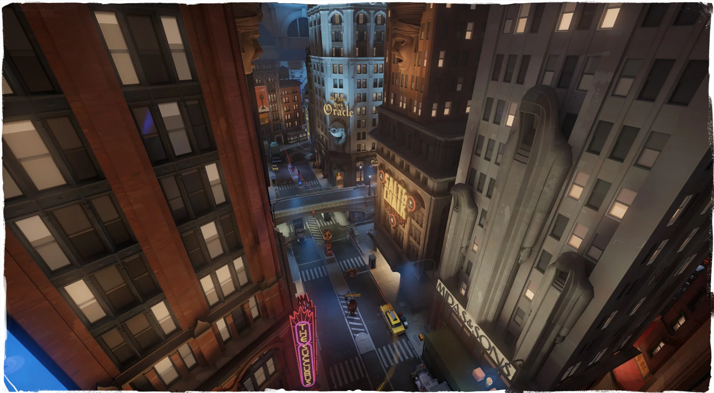

01YOUR FIRST STOP
Uptown
The official visitor’s guide begins here: a route into the action, framed by the city’s unmistakable skyline.
Explore the official city update ↗
◆ AN UNOFFICIAL DEADLOCK CAMPAIGN VOL. 01 / NYC
Strange streets. Unforgettable locals.
A different kind of fight around every corner.
Deadlock is Valve’s multiplayer game in early development. Its unusual city brings supernatural personalities and third-person combat into a world of shifting opportunities.
This independent fan campaign is a creative invitation to explore. For the latest game status and access information, visit the official Steam page ↗.
The neighborhood changes. The feeling stays with you.
Select a stop to discover a different side of the city.

01YOUR FIRST STOP
The official visitor’s guide begins here: a route into the action, framed by the city’s unmistakable skyline.
Explore the official city update ↗Environment images: Valve’s City Never Sleeps update. Tour copy and map design: this fan campaign.
Meet a few of the city’s remarkable residents.
Open a dossier. Find a point of connection.
Character artwork from game-resource references. Descriptive campaign themes, not official role classifications.
A pocket-sized introduction to the decisions
behind the action. Explore the five entries.
An introductory fan guide. Game mechanics and balance evolve during development. Follow the current in-game tutorial and official updates.
Your instincts say something about your style.
Answer four questions to meet a possible match.
A playful campaign quiz, not a competitive assessment.
Everything happens in your browser.

05 / A COMMUNITY INVITATION
One place. One frame. One sentence. Discover the city through the eyes of the people who play in it.
Our community playbook brings together a complete screenshot-challenge concept: the creative brief, submission template, judging criteria and moderation notes.
Read the playbook ↗Ready-to-run event concept. No live submissions or scheduled event.
Explore the visual collection and the editorial kit.
Download a piece, or take the complete creator pack.
BEFORE YOU GO
No. This is an independent, unofficial fan campaign. Deadlock and its characters belong to Valve. Original campaign artwork, copy and layouts are presented as fan concepts.
At the research check on October 29, 2026, the Steam page described early development and access through invitations from existing playtesters. Check the official Steam page for the current position. This site does not issue invitations.
The city-explorer images are official game-environment material. The large atmospheric campaign illustration and poster are original AI-assisted concept art, not gameplay screenshots. Hero portraits are game-resource references. See the asset register for individual sources.
The kit includes campaign artwork, editorial guides, a factsheet, publication copy, a community playbook, a release plan and source information. Individual print collections are also available below. It is a fan-campaign package, not Valve’s official press kit.
No answers are transmitted or stored. The quiz runs locally in the page. You can optionally download a personal result card. There are no trackers or signup forms.
YOUR NEXT STOP
Early development. Follow official channels for access and updates.